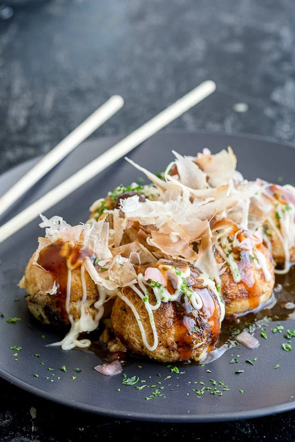

Takoyaki

Description
Takoyaki is a very casual fast food in Japan. It might not be easily found at Japanese restaurants in the US or other parts of world even though it is a very popular dish.
Takoyaki tastes a little bit like round shaped Okonomiyaki, but it has a much different flavor from the Tako (octopus) cooked inside them.
Ingredients
- 2 cups (480ml) Dashi
- 2 eggs
- 1 teaspoon (5ml) soy sauce
- 1/4 teaspoon salt
- 1 cup plus 2 tablebspoons all purpose flour
- 2-3 green onions, finely chopped
- 2 tablebspoons Benishoga (pickled red ginger), chopped
- Boiled octopus*, cut into 1/2" cubes
- Oil
- Takoyaki Sauce or Okonomiyaki sauce
- Mayonnaise
- Aonori
- katsuobushi
- *Subsitute octopus with sausage, cheese, ham, and etc.
Steps
- In a large bowl, mix well Dashi, eggs, soy sauce, salt, and flour with a whisk.
- Heat a Takoyaki pan with oil to very hot, just until the oil begins to smoke.
Use enough oil to coat the pan using a paper towel so that the batter won't stick. Then pour batter to fill the holes of the pan.
- Drop octopus pieces in the batter in each hole, and sprinkle chopped green onions and ginger all over the pan.
- Cook at medium heat for 1-2 minutes and turn over using a Takoyaki turner (you can use a chopstick too).
It can be a little tricky at first, so watch the video to see the technique. Cook another 3-4 minutes, turning constantly.
- Place the cooked Takoyaki on a plate and pour Takoyaki sauce and mayo over them (to taste).
Finish the dish by sprinkling the Takoyaki with Aonori (green dried seaweed) and Katsuobushi (dried bonito flakes).
Back to Recipes